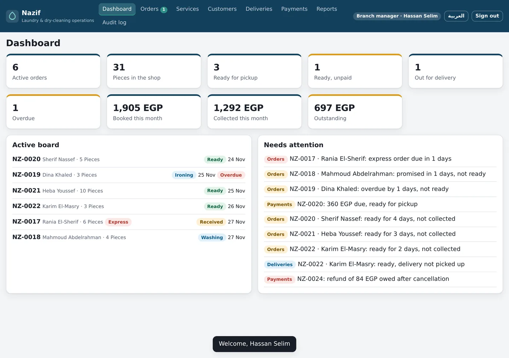
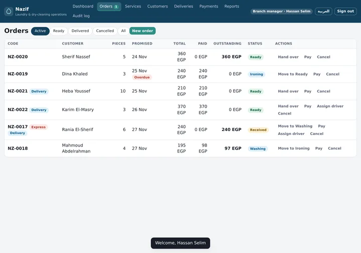
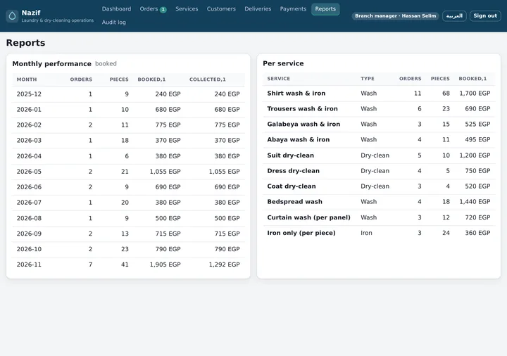
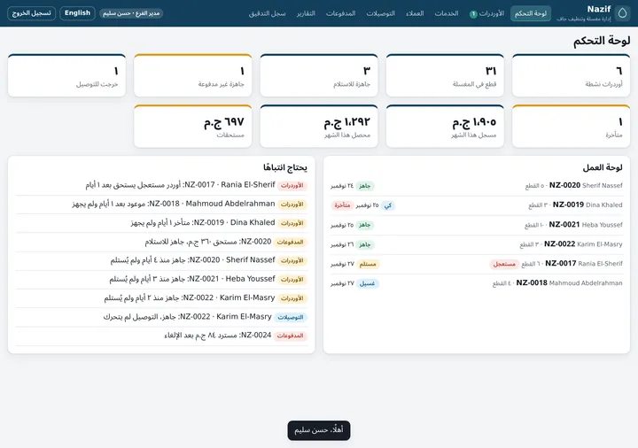
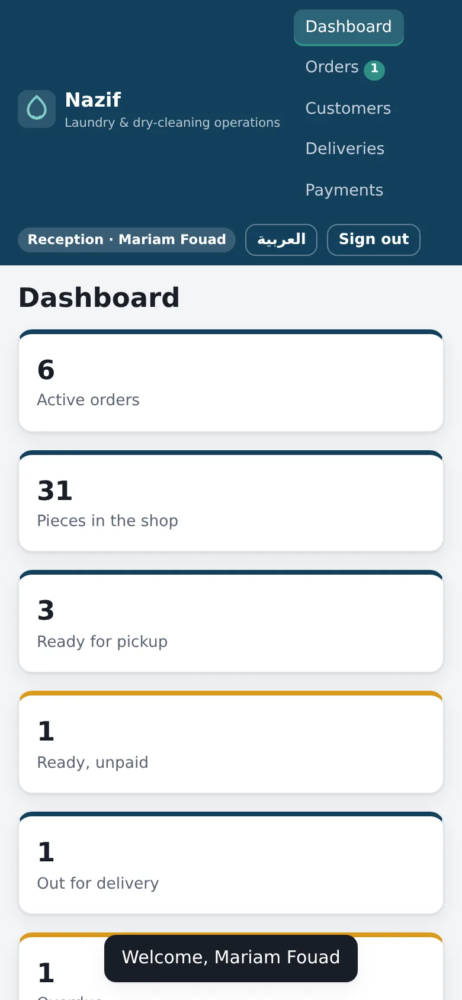

PORTFOLIO DEMO / BUILT / LIVE DEMO
Nazif
Every order, piece and payment, on one record. Branch operations the way a Cairo laundry actually runs them.

ACTUAL BUILDNazif · Branch manager dashboard. Fictional branch, customers and orders.
The problem
A laundry branch runs on a receipt book and the counter worker's memory. Nobody can say which bag belongs to which customer without opening it, the express suit promised for tomorrow is discovered tonight, the customer who collected without paying is reconciled from a notebook when they return, and the driver learns about the new address after he has already left.
What was built
An operations system for one branch with five roles. A ten-item price list carries wash, iron and dry-clean services with per-piece prices. An order is taken for a customer from the list, each piece's price is snapshotted at intake, express adds fifty percent and promises the next day while standard promises three, and a home-delivery order needs an address and opens a delivery job. Orders only move forward: the laundry team moves pieces through washing, ironing and ready, and only the front desk hands an order over — never while a balance is open, and never before the delivery job on it is complete. A payment can never exceed the balance or be dated in the future. Cancelling an order cancels its delivery job and flags any refund owed on the dashboard. Delivery jobs only move forward, a job cannot go out before a driver is assigned, and the driver account touches only its own jobs. The operator never sees a price; the driver sees nothing but their own delivery list, with every amount removed from the response on the server, not hidden on screen. The interface works in Arabic (right to left) and English, and on a phone.
What changes for the branch
Before. The express order is remembered when the customer calls angry. The bag ready since last week is found when the shelf fills up. The balance a customer still owes is assembled from receipt stubs, and the driver phones the branch for the address he never got.
After. The dashboard names the express order due tomorrow and still in the wash, the ready bag uncollected for days and still unpaid, and the ready order whose delivery nobody has picked up. A paid order cannot leave without its delivery done, and every cancelled order with money in hand shows the refund owed. The driver reads their delivery list instead of waiting for a phone call.
Why it matters to a branch owner
A branch's reputation sits in promises kept and its money sits in small balances that add up. When the order, its pieces, its stage and its payment record come from the same ticket the team actually updates, nothing depends on one person's memory, and the refund owed is a number on a screen, not an argument. These are designed situations, not measured results from a real branch.
The approach
No framework and no build step: plain JavaScript pages, one serverless API function and one logic file that holds every rule (the price snapshots, the express surcharge and promise, the forward-only shop stages, the deliver-while-unpaid and delivery-incomplete guards, the payment limits, the delivery-job flow, per-role views, the deterministic sample branch). The same file runs in the API, the browser and the test suites. Permissions are enforced on the server on every operation, create operations carry idempotency keys so a retried request never takes an order or records a payment twice, and every action lands in an audit log the manager alone can read. What a role must not see is removed from the response on the server, not hidden on screen.
The result
A live demo anyone can open. Sign in as the branch manager (PIN 1111), reception (2222), finance (3333), a laundry operator (4444) or a delivery driver (5555); the PINs are on the sign-in screen. The sample branch has 10 customers, a 10-item price list, 24 orders across a year of history and the current week from received to delivered, 9 delivery jobs and 40 payments across twelve months, and one cancelled order still owed a refund. Verification: 15 unit tests and 110 browser and API checks run to completion against the live site, covering forged tokens, malformed and oversized bodies, every role's permission lane, the complete order lifecycle from intake to a ready, paid, delivered order, the balance and delivery guards, idempotency keys, the operator and driver never seeing money even on typed hash routes, XSS stored as text, Arabic RTL, phone-width layouts and zero page errors. The demo state resets itself roughly every six hours, so it always opens as the same working branch.
Inside the build
Open any preview to see the full capture. Captures show demonstration content, not evidence of client use.



